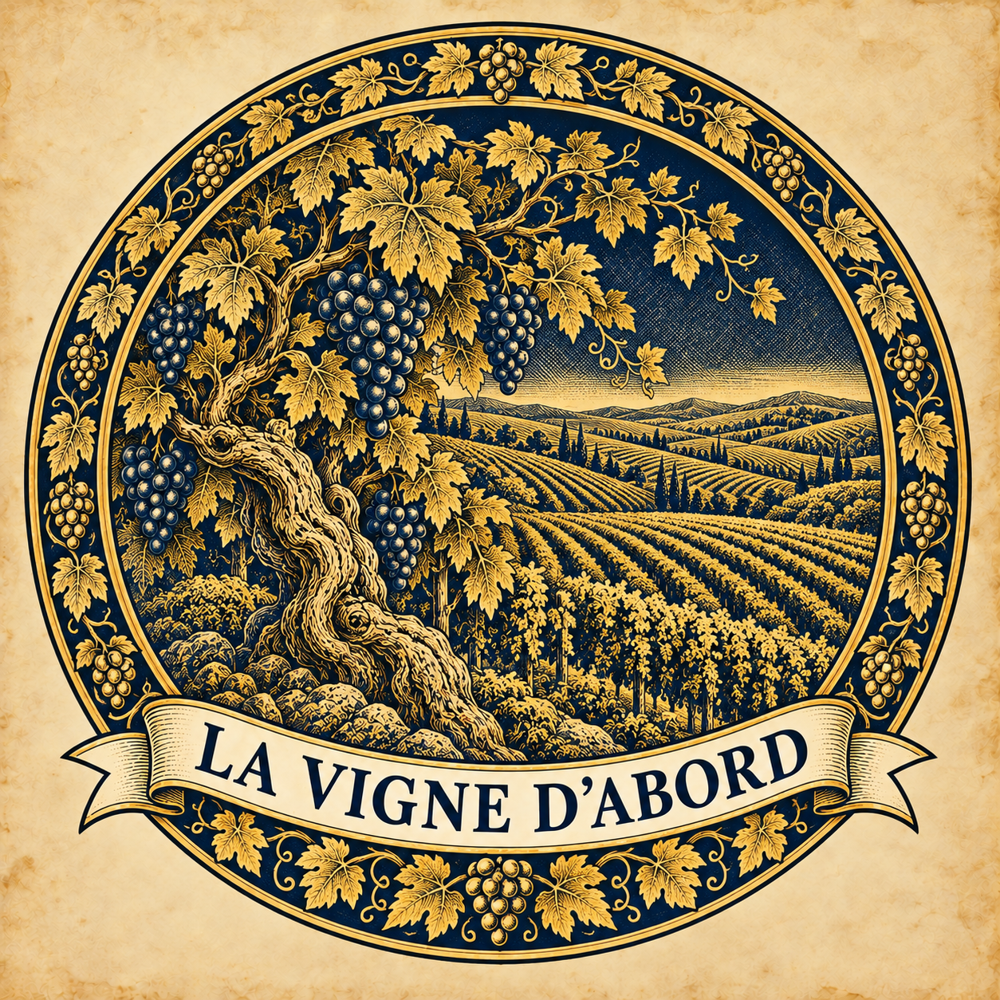

BORDEAUXCadillac.Cadillac-sur-Garonne · Gironde
Bordeaux
Domaine des Perchés
Sur les hauteurs de Cadillac, un domaine où l’héritage familial rencontre une approche curieuse de la vigne et des vinifications.

LA VIGNED’ABORDLE VIN COMMENCE PAR UNE RENCONTRE
Derrière chaque bouteille, il y a une terre et quelqu’un qui la fait vivre. Prenons le temps de les découvrir.
À la rencontre des domainesCEUX QUI LA FONT VIVRE
MÉRITENT D’EN VIVRE.
LA VIGNE D’ABORD
Un domaine, ce n’est pas seulement une étiquette. C’est un lieu, des gestes, des choix. Ici, nous remettons le vigneron au début de l’histoire, pour vous permettre de découvrir son travail et de poursuivre l’échange directement avec lui.
LES DOMAINES · PREMIERS REPÈRES
De Cadillac aux bords de Loire,
trois portes d’entrée pour explorer.
3 domaines à découvrir
Bordeaux
Sur les hauteurs de Cadillac, un domaine où l’héritage familial rencontre une approche curieuse de la vigne et des vinifications.
Loire
Un point de départ sur les bords de Loire, pour découvrir le domaine et sa Cave Insolite à Montlouis-sur-Loire.
Languedoc
À Lauret, sur les contreforts des Cévennes, un domaine inscrit dans les paysages de garrigue du Pic Saint-Loup.
Essayez une autre région ou un autre mot.
Une sélection éditoriale pour commencer à explorer. Coordonnées et informations issues des sites officiels des domaines et de leur appellation.
NOTRE CONVICTION
Ceux qui la font vivre
méritent d’en vivre.
Nous croyons aux rencontres qui donnent du sens à ce que l’on choisit. À la curiosité pour un terroir, au temps passé dans les rangs et aux conversations qui se poursuivent après la visite.
La Vigne d’abord est un point de départ : on découvre ici, puis on échange avec le domaine. Pour connaître ses vins, organiser une visite ou lui poser une question, le lien mène directement à la source.
Trouver un domaineDU PREMIER REGARD AU PREMIER ÉCHANGE
Explorez les régions, les lieux et les histoires. Gardez vos domaines préférés à portée de main.
Découvrez un cépage, un geste ou une façon de travailler. Le journal donne les premiers repères.
Retrouvez les coordonnées officielles. Pour les visites et les vins, le domaine reste votre interlocuteur.
LE JOURNAL · COMPRENDRE LE VIN
Quelques repères pour regarder
la vigne autrement.
LES QUESTIONS, TOUT SIMPLEMENT
La Vigne d’abord vous aide à découvrir les domaines et à les contacter. Pour les disponibilités, les tarifs et les commandes, rendez-vous directement sur leur site ou auprès de leur équipe.
Les premières fiches sont une sélection éditoriale fondée sur des informations publiques. La présence d’un domaine ne signifie pas qu’un partenariat a été conclu.
Vérifiez les modalités auprès du domaine avant de partir. Indiquez la date souhaitée, le nombre de personnes et ce que vous aimeriez découvrir. Certains domaines reçoivent uniquement sur rendez-vous.
Vos favoris restent dans le navigateur que vous utilisez. Aucun compte n’est nécessaire. Vous pouvez les retirer à tout moment depuis « Mes domaines ».
LA VIGNE D’ABORD